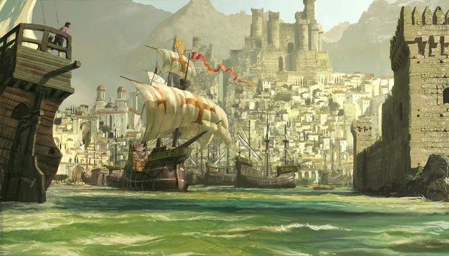
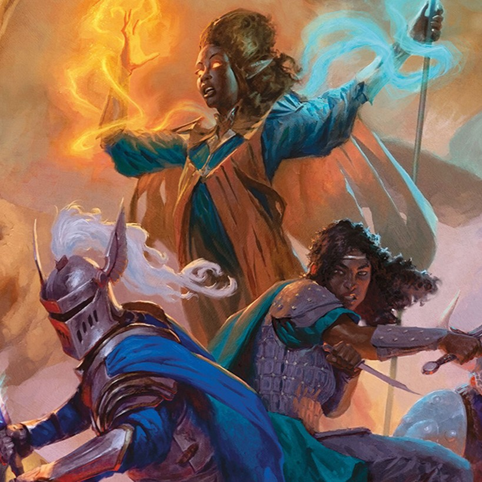
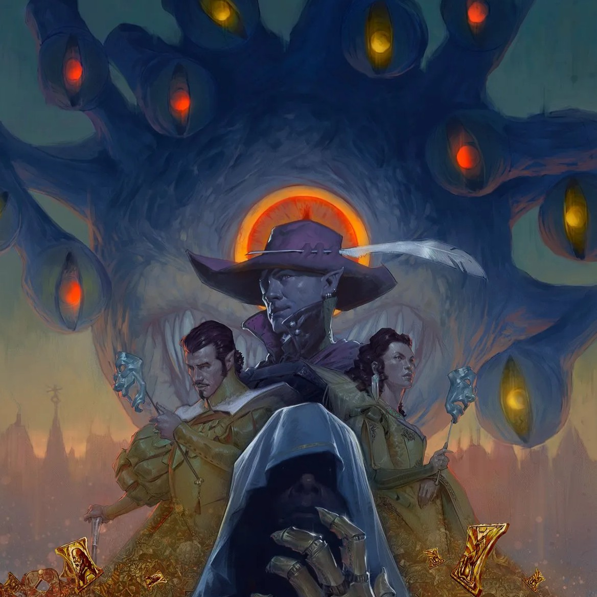

Home > Visit
Plan your visit to Critters of the Forgotten Realms right here in the city of Waterdeep!

Dive into the past and explore the present at Critters of the Forgotten Realms—there’s something for every adventurer.
Tickets are available online and in person at the Museum. Purchase your tickets in advance to skip the line and save time!

General Admission
General Admission includes access to our exhibitions and permanent collection. Some special exhibitions may have additional pricing.
Guests - $25
Waterdhavians - $20
Seniors (ages 65+) - $15
Children (ages 3-12) - $12
Members
Enjoy exclusive benefits including free admission, discounts at our stores, and exclusive event opportunities through the year.
Members
High Circle

Visiting Waterdeep?
Let us be the first to welcome you to the Emerald Jewel of the Sword Coast! Make the most of your stay with great deals from our partners.
CityPASS
Tourism Options
Critters of the Forgotten Realms is committed to providing an accessible experience for all visitors. For question related to accessibility, please contact us at accessibility@crittersoftheforgottenrealms.org, or call us at (123) 456-7890.

Protection service officers and visitor services associates are here to help you when you arrive and throughout your visit. Please don't hesitate to ask for assistance during your time at the museum and inquire with the Visitor Services desk for additional accommodations that may not be listed here.
Wheelchairs are available free of charge on a first-come, first-served basis. Please inquire at the Visitor Services desk upon arrival.
There are four elevators that access all public levels of the museum, located on the north and east sides of the main hall.
Accessible restrooms are available on each floor, as well as an all-gender, single-stall restroom. A family restroom with an adult changing table is available on the ground floor near the South entrance.
Sensory bags are available for visitors who may benefit from them. These include headphones, various fidget tools, emotion cards, and a visual or tactile schedule of the Museum's layout and exhibitions. Please inquire at the Visitor Services desk on the ground floor.
We offer sensory-friendly visits on the first Saturday of every month from 9am to 11am. During these visits, we dim the lights, lower the volume of any audio, and provide noise-canceling headphones for visitors who may benefit from them.
Service animals are welcome in all public areas at Critters of the Forgotten Realms. For more information, please read our Service Animal Policy.
Assisted listening devices are available for visitors who are hard of hearing. Please inquire at the Visitor Services desk on the ground floor.
A paid personal care assistant (PCA) accompanying a visitor with severe disability receives free admission. Upon request at the ticket counter, the PCA receives the same admission pass that the visitor purchases. If the visitor is a member, the PCA receives free admission but does not count as one of the member's guests.
LOCATION
Critters of the Forgotten Realms
123 Fantasy Lane
Trollskull Alley, Waterdeep 45678
Phone: (123) 456-7890
Directions